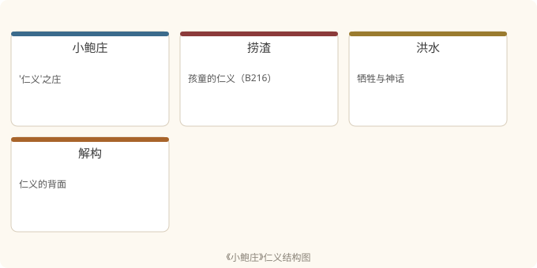

小鲍庄
一、基本信息
| 作者 | 王安忆 |
|---|---|
| 成书/出版 | 1985年出版（英文维基 B216：Baotown (1985)）；获第四届全国中篇小说奖（B216） Wang Anyi — Wikipedia (EN)（百科全书） |
| 国别/地区 | 中国 |
| 时代 | 现当代 · 当代 |
| 体裁 | 中篇小说 |
| 语言 | 汉语（白话） |

《小鲍庄》仁义结构图（主题·结构图）
二、创作背景
英文维基（B216）：'In Baotown (1985), Wang focused on the culture of rural China, drawing from her own experience'——转向乡土中国文化；获第四届全国中篇小说奖（B216 获奖列表）。
英文名著（B216 转述评论）：仁善的孩童主角与'自私、偏见的残酷和封闭的成年村民'的对照（'benevolent child protagonist is contrasted with selfish, prejudicial, cruel and close-minded adult villagers'）。
三、内容脉络
小鲍庄的'仁义'传统与涝渣（鲍仁文）之死（人物名与情节通说待核）。
'仁义'神话的解构（通说待核）。
四、主要人物表
| 人物 | 身份 | 说明 |
|---|---|---|
| 捞渣（鲍仁文） | 孩童 | 仁义的化身（通说待核） |
| 鲍彦山一家 | 村民 | （通说待核） |
五、主题与艺术特点
- '仁义'文化的审视（B216：rural China culture）。
- 孩童与成人的对照（B216：benevolent child protagonist）。
- 寻根文学的乡土书写（B216 语境：王安忆'写于中国'的决定）。
六、影响与评论
- 英文维基：获第四届全国中篇小说奖（1987年颁奖）（B216）。
Wang Anyi — Wikipedia (EN)（百科全书） - 英文维基：转引评论——'words that carry not the least hint of subjectivity'（不以主观色彩的语言）（B216 转引 Ying Hong）。
Wang Anyi — Wikipedia (EN)（百科全书）
七、阅读建议
难点
- '仁义'话语的反讽。
- 多人物群像。
- 《小鲍庄》（人民文学出版社/上海文艺出版社版本，通说待核）。
对照《爸爸爸》（韩少功——通说）：寻根文学的两幅面孔。
八、待核实
- 捞渣/鲍仁文人名与情节核对。
- 第四届全国中篇小说奖颁奖年份核对。
- '寻根'标签与作者的疏离待核。
本页主要来源
王安忆的其他收录作品：长恨歌